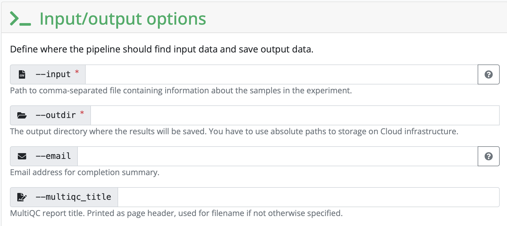
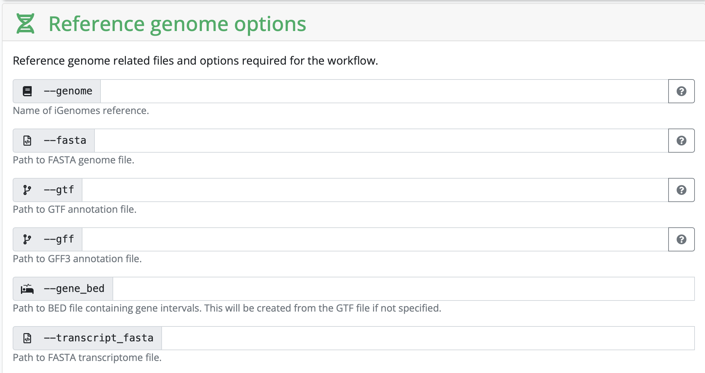

nfcore RNASeq Pipeline
Introduction
Now that you know about Linux, containers, pixi, and Nextflow, we get to start with the really cool part of our course! In this section, we will create a pixi environment containing nf-core and nextflow. Once we’ve done that, we will turn our attention to nf-core to set up the rnaseq pipeline. Finally, we will run the pipeline.
Setting Up Your Pixi Environment
In our course directory execute these commands, one after the other.
Let’s inititalise an environment for this. Again, please substitute your name in the name part of the commands.
pixi init name_nextflow -c conda-forge -c biocondaChange directory into the project you created, and just list the files there
cd name_nextflow
lsAdd nf-core and Nextflow
pixi add nextflow nf-coreWhile apptainer is sticky loaded on this server, it won’t always be the case for other servers. So, you can add apptainer in the add command
And just check that everything worked, summon the help message from nf-core
pixi run nf-core --helpPreparing The Run
From the nf-core homepage, we can search for pipelines. We are going to demo the rnaseq pipeline. You can see that there is a lot going on in this pipeline! We will chat more about these things in class rather than including screenshots of everything.
Under the Usage, you will find a lot of information that describes the pipeline, including input information, the samplesheet.csv (this one we will make together in class).
Under the Parameters tab you will find information on all of the things that we will set up in the next step.
Under the Output tab, you will find information on the expected output generated from the pipeline. This is useful to help you interpret what the pipeline produces.
To set up our own analysis, we will click on the launch version 3.18.0 button. (This was the version on the website at the time of writing this session. The version number may change). We are then redirected to a page where we can fill in all of our information about input files, as well as selecting or deselecting certain parts of the pipeline. We will share the things here that you need to input each time, and go through some finer details based on the discussion with you.
Setting working and results directories
We recommend that you use absolute paths rather than relative paths for setting your runs up
During the first part, you need to set a working and result directory. If you are using a server that has a profile established, you can put the name of the server there. If not, we will create our own configuration profile if we run into memory issues.


We will compile the input CSV together in class. This is entirely unique to each analysis.
To list all fastq files with their absolute path, one per line
find . -maxdepth 1 -type f -name "*.fastq.gz" -exec realpath {} \;You can substitute the . that indicates it’s only looking in the directory you’re currently in to any other path on your file system
Configuration profiles
Since we are working on a server with a configuration profile established, we have downloaded it and put it in the course folder. If you want to fetch it for yourself
wget https://raw.githubusercontent.com/hpc2n/intro-course/master/exercises/NEXTFLOW/INTERACTIVE/hpc2n.configHere is the configuration profile on HPC2N from the above link. The most important things we need to pay attention to are the max_memory, max_cpus, and max_time settings. If you want to create your own profile, you can adjust these to suit your system requirements.
// Config profile for HPC2N
params {
config_profile_description = 'Cluster profile for HPC2N'
config_profile_contact = 'Pedro Ojeda @pojeda'
config_profile_url = 'https://www.hpc2n.umu.se/'
project = null
clusterOptions = null
max_memory = 128.GB
max_cpus = 28
max_time = 168.h
email = 'pedroojeda2011@gmail.com'
}
singularity {
enabled = true
}
process {
executor = 'slurm'
clusterOptions = { "-A $params.project ${params.clusterOptions ?: ''}" }
}If you copy this config file for yourself, you need to remove the process section, unless you have a slurm job manager installed on your cluster. If you have this, you will defiinitely have a system administrator who can help you write this block to suit your system!
Setting all other inputs that are required
In this section, you set variables that are related to your reference genome. If you are using something listed on iGenomes, you can input that name. If you are working with your own reference genome, or something not listed, you need to input the absolute path of the reference genomes you have downloaded.

Depending on your strategy, you might need to input a corresponding gff as well. It really depends on the kind of analysis you are hoping to perform.
Obtaining your JSON file
Once everything is filled in, click on Launch and you will be redirected to another page containing your JSON file that has information on your run. You can either run the analyses by copying the command at the top of the page (BUT DON’T PRESS ENTER JUST YET) or by copying the JSON file a bit lower on the screen and saving it as nf-params.json in your folder on HPC2N.
Starting The Run
Since we are running this through Pixi to show you the versatility of environments, we need to submit this through a batch script to slurm. Copy the following text to file called name_submit_rnaseq.sh where name is your name.
#!/bin/bash -l
#SBATCH -A our_proj_allocation
#SBATCH -n 5
#SBATCH -t 24:00:00
/your_home_directory/.pixi/bin/pixi run nextflow run nf-core/rnaseq -r 3.18.0 -params-file /your_path/nf-params.jsonAnd then submit it to slurm with
sbatch name_submit_rnaseq.shslurm is a job management tool installed on many servers to distribute resources evenly among users. If you are running this on your own machine later, you can just run it through pixi run as before
You can check the progress of your job with squeue -u your_username
And now we wait until the run is done!